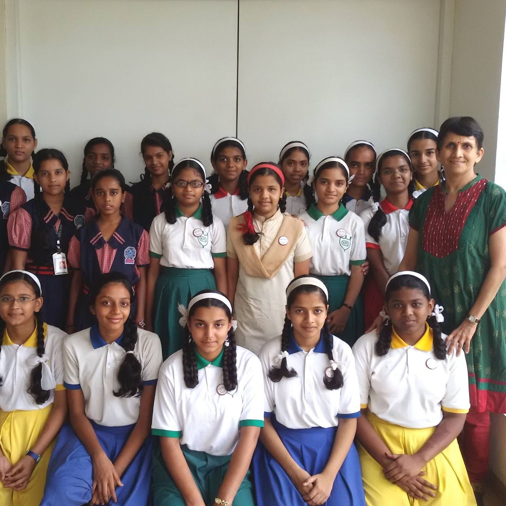
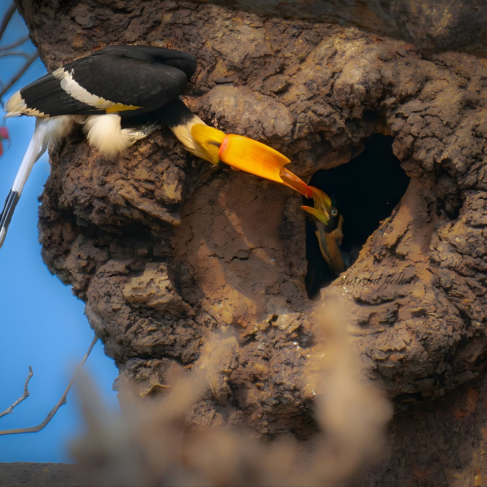
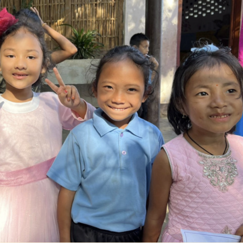
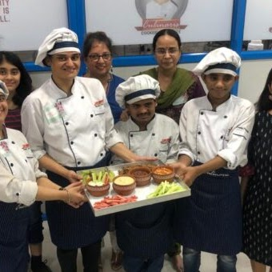

At RAFT, we believe that meaningful change begins with the courage to imagine a different future. We support ideas that look at problems differently, trust communities as drivers of progress, and use knowledge to open new pathways for impact.
When a girl learns, her world expands—and so does the world around her. We invest in initiatives that unlock opportunity, agency, and aspiration for girls, enabling them to lead with confidence and shape their own futures.
India’s ecosystems hold immense beauty and wisdom. We support efforts that protect these fragile landscapes, uplift the communities that depend on them, and build a sustainable, resilient future grounded in harmony with nature.
The North East’s tribal communities carry deep cultural heritage. We partner with organisations that strengthen education through community-rooted, culturally respectful approaches, ensuring children learn with dignity and belonging.
India has the talent to imagine world-changing solutions. We support science-driven incubators and inventive startups that address complex, structural human problems and expand the boundaries of what is possible.
Every individual deserves the opportunity to learn, grow, and participate fully. We support organisations that champion inclusion, dignity, and independence through skill training, food programs, and employment ecosystems.
Through trust-based grantmaking, flexible funding, and sustained collaboration, we back organisations that turn vision into lasting impact.

Aatmaja Foundation empowers underprivileged girls through education, mentoring, and career guidance. Founded in 2015 with just 20 girls, it now supports over 400 beneficiaries and has positively impacted more than 500 girls across Maharashtra. More than a scholarship program, Aatmaja is a nurturing ecosystem committed to shaping confident, independent, and skilled young women from disadvantaged communities.

Sahyadri Sankalp Society works to protect the fragile ecosystems of the Western Ghats (a UNESCO World Heritage Site). Restoring habitats, promoting eco-friendly agricultural practices, and building sustainable livelihoods, the society partners with ecologists, farmers, youth, and women to protect biodiversity and restore ecological balance.

The Hummingbird School operationalizes holistic education for underserved rural, tribal, and remote children, aligned with the National Education Policy 2020. Nurturing social, physical, and emotional growth, the school also serves as a teacher training hub, hosting 500+ educators nationwide, multiplying quality and reach across Northeast India.
Venture Center was set up by the National Chemical Laboratory under CSIR as a non-profit incubator (Entrepreneurship Development Center). It is an approved incubator of DST-NSTEDB and BIRAC (Department of Biotechnology), supporting and nurturing inventive science- and technology-led ventures solving hard global problems.

Established in memory of Veruschka Dias, this foundation empowers people with developmental disabilities and autism through food-based culinary training. Using cookery as its core medium, the foundation builds independence, provides mainstream jobs, and supports sustainable entrepreneurship.